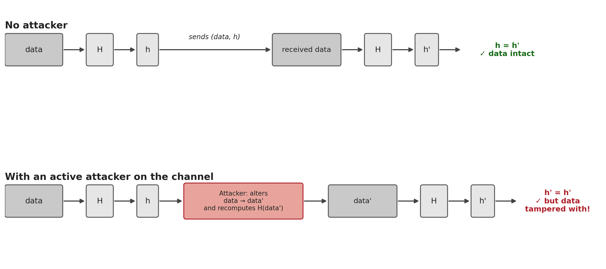
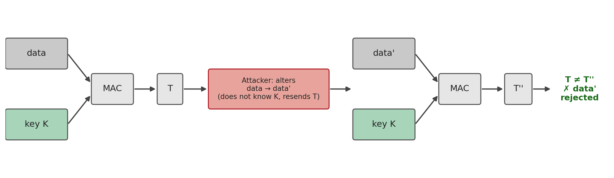
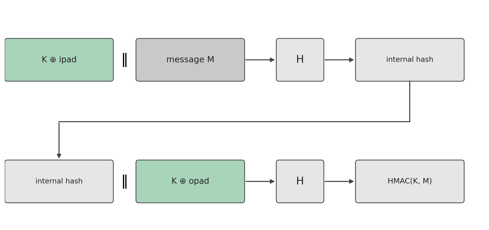

5 Hashing — Properties, Attacks, SHA, MAC and HMAC
Introduction
The previous chapters always dealt with confidentiality: how to transform a message so that only someone holding the right key can read it. But confidentiality is not the only property a secure communication needs to guarantee. A message can travel perfectly encrypted and still be altered along the way, or not actually come from whoever it claims to come from. This chapter changes problem: it deals with integrity (the guarantee that data has not been altered) and authentication (the guarantee that data comes from whom it is expected to), and with the tool that underlies both, the hash function.
5.1 What Is a Hash Function
A hash function transforms an input of arbitrary size into an output of fixed size, generally much shorter:
\[h = H(x)\]
where \(x\) is the value (or message) to be digested, \(H\) is the hash function, and \(h\) is the hash value (also called the digest). \(x\) is known as the preimage of \(h\).
Two, at first sight simple, characteristics define the essence of a hash function: it is deterministic (the same input always produces the same output) and it is a compression function (inputs of any size, potentially huge, always produce an output of the same fixed size, typically between 128 and 512 bits). This second characteristic has an unavoidable mathematical consequence: since the set of possible inputs is infinite and the set of outputs is finite, collisions must exist, pairs of different inputs that produce the same hash value. The security of a hash function can never rest on avoiding them altogether, that is impossible, but rather on making them computationally infeasible to find deliberately. This is exactly what the next section formalizes.
5.2 Properties of a Hash Function
Not every function that compresses data is useful in cryptography. The following properties (Stallings 2020) distinguish a weak hash function from a strong one:
| Requirement | Description |
|---|---|
| Variable input size | \(H\) can be applied to a block of data of any size |
| Fixed output size | \(H\) always produces an output of fixed length |
| Efficiency | \(H(x)\) is easy to compute for any \(x\), making hardware and software implementations practical |
| Preimage resistance (one-way) | Given a hash value \(h\), it is computationally infeasible to find \(y\) such that \(H(y) = h\) |
| Second preimage resistance (weak collision resistance) | Given a block \(x\), it is computationally infeasible to find \(y \neq x\) with \(H(y) = H(x)\) |
| Collision resistance (strong collision resistance) | It is computationally infeasible to find any pair \((x,y)\), with \(x \neq y\), such that \(H(x) = H(y)\) |
| Pseudorandomness | The output of \(H\) meets the standard statistical tests for randomness |
The first four properties define a weak hash: sufficient to detect accidental transmission errors, but not to withstand an attacker. The last three, added on top, define a strong hash, the only kind suitable for cryptographic uses. It is worth not confusing the last two collision-resistance properties, which are easy to mix up:
- Second preimage: the attacker already has a specific \(x\) (for example, an original contract) and wants to find another document \(y\) with the same hash, in order to substitute it without the substitution being detected.
- Collision: the attacker has no fixed starting document, they just want to find any pair \((x,y)\) that collides, which is structurally easier to achieve.
This difference has an important practical consequence, known as the birthday paradox: finding any collision for a hash function with an \(n\)-bit output costs, on average, only about \(2^{n/2}\) attempts, far fewer than the \(2^n\) that intuition would suggest, and far fewer still than the \(2^n\) needed to break preimage or second-preimage resistance. This is why the output size of a hash function must be roughly double the intended security level: a 256-bit hash gives only \(2^{128}\) of security against collisions, not \(2^{256}\).
5.3 The SHA Family
Over the last three decades, several families of hash functions have competed for the position of de facto standard. The earliest, MD4 and MD5 (Message Digest, Ron Rivest, 1990 and 1992), with outputs of only 128 bits, ended up formally broken: Wang and Yu presented a practical method for generating MD5 collisions in 2005 (Wang and Yu 2005), and today MD5 must not be used for any cryptographic purpose, only for non-adversarial integrity checks (for example, confirming that a file transfer was not corrupted by error).
SHA (Secure Hash Algorithm), standardized by NIST, became the reference family (National Institute of Standards and Technology 2015). SHA-1 (160 bits, 1995) remained in widespread use for two decades, despite theoretical weaknesses known since 2005, until Google and CWI Amsterdam published, in 2017, the first practical collision (the SHAttered attack), two distinct PDFs with the same SHA-1 hash (Stevens et al. 2017). Since then, SHA-1 has been formally discouraged for any use that relies on collision resistance, including digital certificates and signatures.
The currently recommended family is SHA-2, which groups several variants according to output size and internal structure:
| Algorithm | Message size | Block size | Word size | Digest size |
|---|---|---|---|---|
| SHA-1 | \(< 2^{64}\) | 512 | 32 | 160 |
| SHA-224 | \(< 2^{64}\) | 512 | 32 | 224 |
| SHA-256 | \(< 2^{64}\) | 512 | 32 | 256 |
| SHA-384 | \(< 2^{128}\) | 1024 | 64 | 384 |
| SHA-512 | \(< 2^{128}\) | 1024 | 64 | 512 |
| SHA-512/224 | \(< 2^{128}\) | 1024 | 64 | 224 |
| SHA-512/256 | \(< 2^{128}\) | 1024 | 64 | 256 |
SHA-256 is today the default choice for the generality of new applications, used, among others, in TLS, Git, and Bitcoin. In practice, computing a digest is a trivial operation on any Unix system:
$ echo "Olá Mundo! João Pavão" > hashtext.txt
$ openssl md5 hashtext.txt
MD5(hashtext.txt)= dafa6ed4f172ed103c577334bdfa375d
$ openssl sha1 hashtext.txt
SHA1(hashtext.txt)= f8372d55ba7ae3655ec0f886ef658f94879646c1Note that the two digests, despite being computed over the same file, show no visible relationship to one another, precisely the pseudorandom behaviour required in Table 5.1.
5.4 Checking Integrity — and Its Limits
The most direct use of a hash function is to check whether a piece of data has remained intact: the sender computes \(h = H(\text{data})\) and sends both together; the receiver recomputes the hash over the data received and compares it with the value received. Any alteration to the data, even of a single bit, changes the hash value unpredictably (the pseudorandomness property), making the alteration detectable.
But this scheme has a serious flaw, which only becomes visible once an active attacker, capable of intervening on the communication channel, is considered, rather than just an accidental transmission error:

The root of the problem: \(H\) is public. There is no secret involved in computing the hash, so an attacker capable of altering data in transit is equally capable of recomputing the hash corresponding to the altered data. The hash value, on its own, proves that the data did not suffer an accidental error, but it proves neither that the data comes from whoever claims to have sent it, nor that it was not deliberately tampered with by someone along the way. What is missing is an ingredient that only the legitimate sender and receiver possess, and that an attacker cannot reproduce: a shared secret.
5.5 Message Authentication: the MAC
The simplest solution to the problem identified in the previous section is to introduce a secret key \(K\), shared only between sender and receiver, into the computation of the digest itself. A MAC (Message Authentication Code) is exactly this: a function that takes the message and a secret key, and produces a short tag that only someone who knows the key can correctly compute or verify.
\[T = \text{MAC}_K(\text{data})\]

A concrete example helps fix the idea. Suppose a bank transfer order, “Transfer €100 to IBAN PT50…”, protected with \(\text{MAC}_K\). The bank receives the message and the tag, recomputes \(\text{MAC}_K\) over the received message with the same key \(K\) (previously agreed with the customer, for example when activating the card), and compares. If an attacker intercepts the message and changes “€100” to “€10000”, the old tag no longer matches the altered message, and computing the correct tag for the new message would require knowing \(K\), exactly what the attacker in Figure 5.1 lacked.
Note the fundamental difference from a plain hash: a MAC guarantees two properties at once, integrity (the data has not been altered) and authenticity (the data can only have come from someone who knows \(K\), that is, from the legitimate sender). This is why MACs share the same trust model as symmetric ciphers: they require a key previously agreed between the two parties, over a secure channel.
The most direct idea for building a MAC from an existing hash function is to combine the message with the secret key before passing it through \(H\). It is no accident that this is exactly the logic of several classic designs: encrypting the hash of the message with a symmetric key, encrypting only the hash instead of the whole message, or, in its simplest form, computing \(H(\text{data} \Vert S)\) using just a shared secret value \(S\), with no encryption involved at all, sufficient for authentication and integrity, albeit without confidentiality. This last construction, a plain hash with a secret concatenated to the message, seems to solve the problem, but it hides a trap that the next section takes apart.
5.6 HMAC
Naively concatenating a key to a message before passing it through a hash function seems reasonable, but the two obvious ways of doing it have distinct problems (Preneel and Oorschot 1995).
Prefix, \(H(K \Vert M)\). The functions in the MD5/SHA family (SHA-1 and SHA-2 included) process the input in blocks, updating an internal state block by block, and the final hash value is literally that internal state, with no final closing step. This enables a length-extension attack: knowing only \(H(K \Vert M)\) (not \(K\)), an attacker can compute \(H(K \Vert M \Vert M')\), a valid tag for an extended message, for any \(M'\) of their choosing.
A simplified example makes this concrete (this is not how SHA-256 actually works internally, but it illustrates exactly the structure of the problem). Imagine a toy hash function that processes the message block by block, updating a state that starts at 0, and returns that state directly as the final result:
\[\text{state} \leftarrow (\text{state} + \text{block}) \bmod 100\]
Let the secret key be \(K=7\) (one block) and the message \(M=42\) (another block). The tag computed by the sender is:
\[H(K \Vert M) = (0 + 7 + 42) \bmod 100 = 49\]
An attacker who intercepts the message and the tag \(49\) does not need to know \(K\) to forge a valid tag for the extended message \(M \Vert M'\), with \(M'=13\) of their choosing: they simply continue the same computation from the state they already know, \(49\):
\[(49 + 13) \bmod 100 = 62\]
which is exactly the value the receiver would obtain by computing \(H(K \Vert M \Vert M')\) from scratch, with the real key (\(0+7+42+13=62\)). The attacker never knew that \(K=7\): they only needed to know that the old tag was the internal state, and that continuing the computation from it is just as easy as computing it the first time. It is exactly this property, the final hash value being reusable as a starting point to continue the computation, that MD5, SHA-1 and SHA-256 genuinely share (the only real complication in these algorithms is an extra padding block, which the attacker can also reconstruct from the known length of \(K \Vert M\)), and that makes this attack practical, not merely an academic exercise.
Suffix, \(H(M \Vert K)\). Placing the key at the end, instead of at the start, avoids the previous attack, because the attacker can no longer continue the computation from a state that already includes the key. But it trades it for another problem: finding two messages \(M_1 \neq M_2\) that collide before \(K\) is processed is already enough to forge a valid tag for \(M_2\) from the tag of \(M_1\) (the key, applied afterwards, produces the same result for both), a practical attack against hashes with weak collision resistance, such as MD5 (Section 5.3).
The HMAC (Hash-based MAC) construction, proposed by Bellare, Canetti and Krawczyk (Bellare, Canetti, and Krawczyk 1996) and standardized in RFC 2104 (Krawczyk, Bellare, and Canetti 1997), avoids both problems by applying \(H\) twice, in a nested structure, instead of concatenating the key just once:
\[\text{HMAC}(K, M) = H\big((K' \oplus \text{opad}) \,\Vert\, H((K' \oplus \text{ipad}) \,\Vert\, M)\big)\]
where \(K'\) is the key adjusted to the block size of \(H\) (padded with zeros if shorter, or itself digested by \(H\) if longer), and ipad and opad are two fixed, public constants (the byte 0x36 and the byte 0x5C, repeated up to the block size), chosen simply for having a large Hamming distance between them, so that the two internal keys, \(K' \oplus \text{ipad}\) and \(K' \oplus \text{opad}\), behave like two independent keys:

This two-layer structure resolves both attacks from the previous list: the outer hash never exposes its internal state from data known to the attacker (the inner hash has already consumed the key before that point), which eliminates length extension, and a collision in the inner hash is no longer enough to forge a tag, because the result still has to pass through the second \(H\), protected by the second key.
A remarkable result from the original work of Bellare, Canetti and Krawczyk is that HMAC’s security does not depend on the collision resistance of \(H\), it depends on a weaker, more robust property of its internal compression function. This is why HMAC-MD5 and HMAC-SHA1 continue, in practice, to have no known attack, despite MD5 and SHA-1 being formally broken as general-purpose hash functions (Section 5.3): breaking HMAC would require a quite different, and harder, type of attack than simply finding collisions in \(H\). Even so, the practical recommendation is to always use HMAC-SHA256 or higher in new systems, out of caution and to avoid depending on subtleties of this nature.
HMAC is today one of the most widely used authentication mechanisms in practice: it protects records in TLS versions prior to 1.3, authenticates packets in IPsec, signs JWT tokens (JSON Web Tokens, in the HS256 algorithm), and underlies request signing in APIs such as AWS’s.
5.7 Chapter Summary
This chapter moved from confidentiality to integrity and authentication:
- A hash function compresses an input of any size into a fixed output, deterministically; since the domain is infinite and the codomain finite, collisions always exist, the goal is to make them hard to find
- A strong hash requires, besides efficiency and fixed output size, resistance to preimage, second preimage, and collision attacks; the last of these is the weakest of the three, and falls after only \(2^{n/2}\) attempts (birthday paradox), not \(2^n\)
- The SHA family is the current reference; MD5 and SHA-1 have known practical collisions (Wang and Yu, 2005; SHAttered, 2017) and are discouraged; SHA-256 is today the recommended choice
- A keyless hash function does not withstand an active attacker: anyone can recompute it, so it proves neither integrity nor authenticity against an adversary capable of intervening on the channel
- A MAC solves this by introducing a shared secret key into the computation of the tag, giving integrity and authenticity simultaneously
- Naively concatenating the key to the message (
H(K‖M)orH(M‖K)) has known problems, length extension in the first case, total dependence on collision resistance in the second - HMAC solves both by applying \(H\) twice, in a nested structure with two derived keys (
ipad/opad); its security does not depend on the collision resistance of \(H\), which explains why HMAC-SHA1 remains without known practical attacks, despite SHA-1 no longer being secure as a general-purpose hash
5.8 Discussion Question
SHA-1 is no longer secure against collisions, and is formally discouraged for digital signatures and certificates. Even so, HMAC-SHA1 remains in use in several legacy systems without being considered a critical flaw. Bearing in mind the distinction between the properties of a hash (Section 5.2) and what HMAC’s security proof actually requires (Section 5.6), why does breaking a hash function’s collision resistance not automatically break the MAC built on top of it?